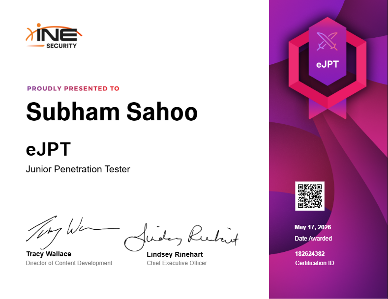
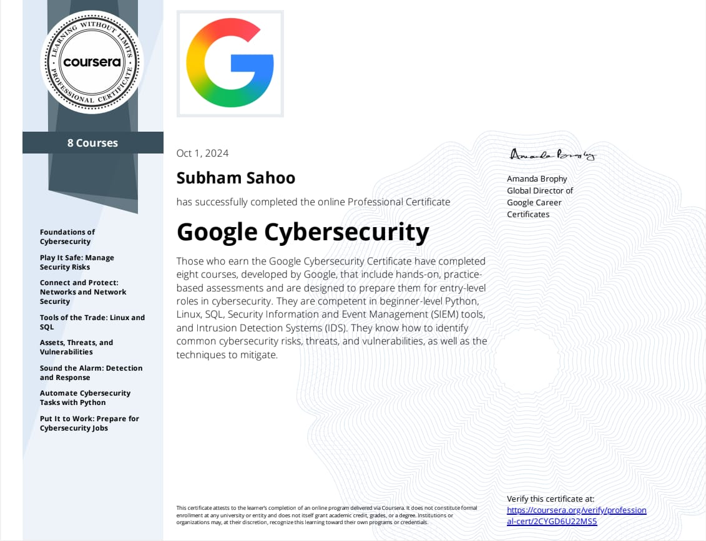
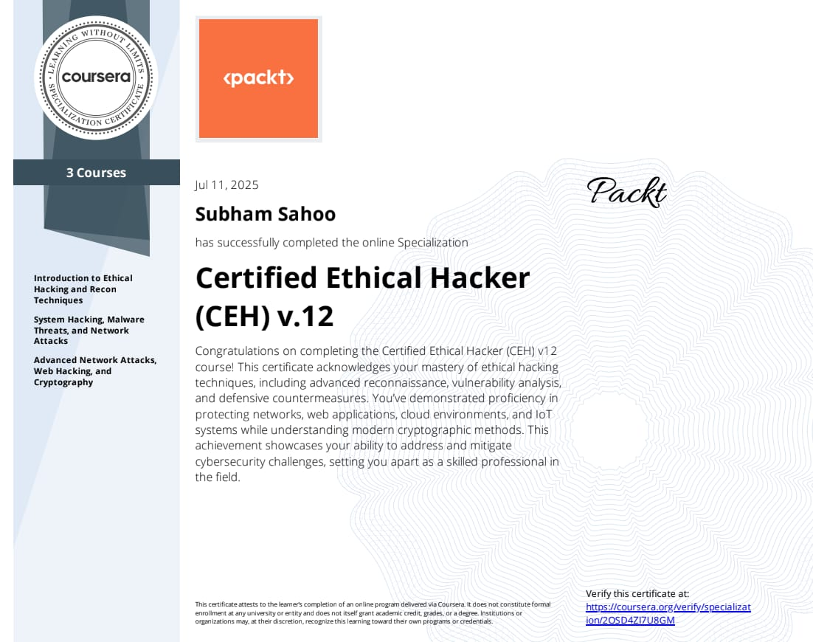
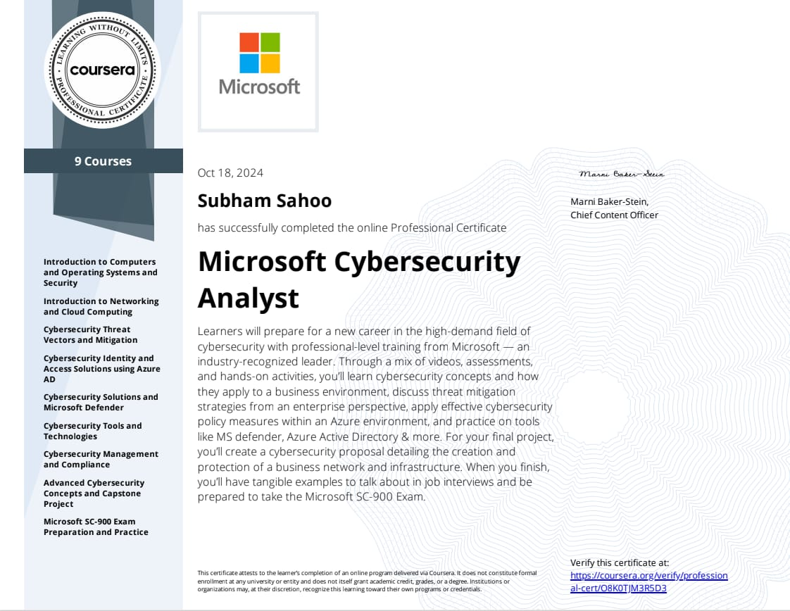
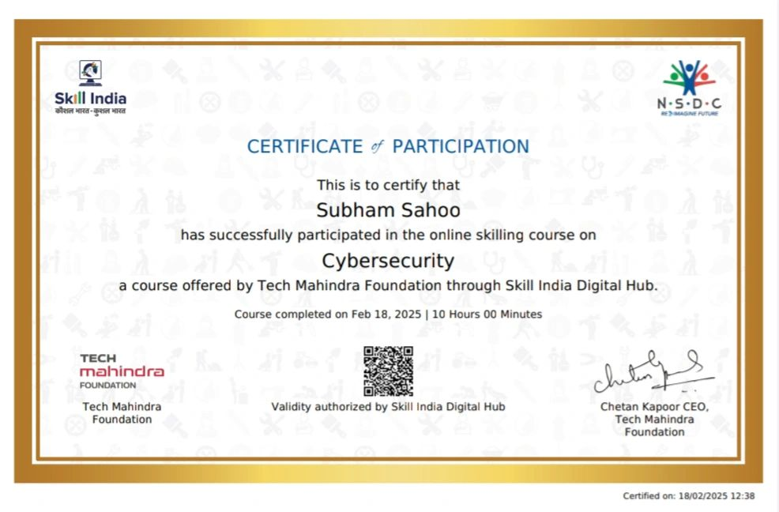
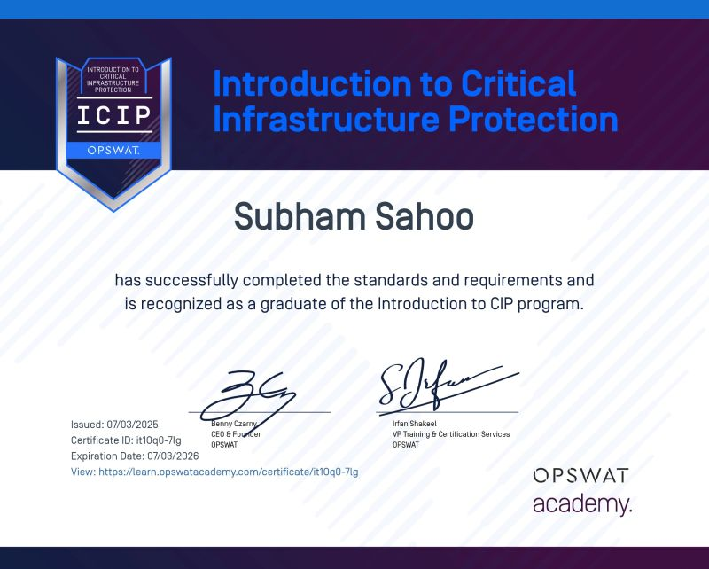

CYBERSECURITY ENGINEER
Passionate Penetration Tester focused on Web Application Security, Active Directory Exploitation, Network Penetration Testing, Vulnerability Assessment, Red Team Operations, Malware Analysis, and Offensive Security Research.
I am a dedicated Cybersecurity Enthusiast and Penetration Tester with hands-on experience in Vulnerability Assessment and Penetration Testing (VAPT), Web Application Security, Network Security, Ethical Hacking, SIEM Monitoring, and Threat Detection. I have worked on multiple cybersecurity projects including Web VAPT Tools, Intrusion Detection Systems, Honeypots, SIEM Solutions, and Phishing Detection Platforms. My expertise includes OWASP Top 10, Linux, Python Scripting, Network Analysis, Security Automation, and industry-standard tools such as Burp Suite, Nmap, Metasploit, Wireshark, SQLMap, Nessus, Gobuster, and Splunk. I regularly publish cybersecurity research and walkthroughs on Medium, participate in CTF challenges, and continuously improve my offensive and defensive security skills.
OSINT, asset discovery, and target enumeration.
SQLi, XSS, authentication security testing.
AD enumeration and privilege escalation techniques.
Scanning, exploitation, and vulnerability analysis.
Persistence, lateral movement, and credential analysis.
Python, Bash, and PowerShell scripting automation.
Static and dynamic analysis of suspicious files.
Identifying and validating security weaknesses.
IAM security and cloud configuration assessment.
Simulating attacker techniques in lab environments.

INE / eLearnSecurity

Google Professional Certificate

EC-Council

Microsoft Certification

Tech Mahindra Foundation

OPSWAT Academy
Automated vulnerability assessment platform designed to identify OWASP Top 10 vulnerabilities, perform security scanning, and generate detailed reports.
Advanced phishing detection and awareness platform capable of analyzing suspicious URLs, emails, and phishing indicators using automation techniques.
Security Information and Event Management (SIEM) solution for centralized log monitoring, alert analysis, threat detection, and incident investigation.
Real-time Intrusion Detection System (IDS) for monitoring network traffic, detecting malicious activities, and identifying suspicious attack patterns.
Cybersecurity honeypot setup designed to monitor attacker behavior, capture malicious activities, and analyze threat intelligence.
Lightweight SIEM platform developed for centralized log collection, security monitoring, and basic threat analysis in lab environments.
Practical penetration testing walkthrough and vulnerability analysis.
Building an intrusion prevention system using Suricata.
SIEM monitoring and cybersecurity threat analysis walkthrough.
Complete preparation strategy, labs, methodology, and tips for successfully passing the eJPT certification exam.